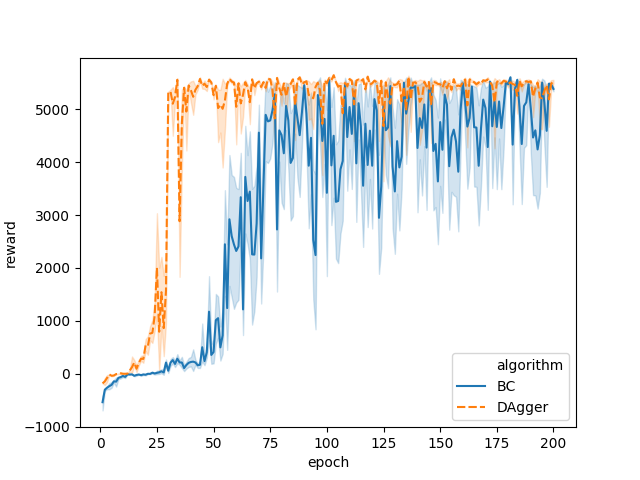

We define 1 epoch to be equal to 1000 training steps. Each training step takes batch of data of size 32 randomly. I understand that this is usually not the definition of epoch but for brevity we will use epoch to signify 1000 training steps. The reason I use this definition of epoch is that the amount of data gathered from the expert or using Dagger algorithm varies depending on the number of rollouts. By fixing definition of epoch, we make sure that the size of data being used to train the neural network remain constants for varying amount of data gathered for comparison purpose.
I implemented behavioral cloning which is just supervised learning algorithm implemented for Reinforcement Learning. I use a neural network with 2 fully connected hidden layer with RelU activation function and dropout layer. Both of the hidden layer has 64 neurons.
| Environment | Expert Rewards | BC Rewards | DAgger Rewards |
|---|---|---|---|
| Ant-v2 | 4700 (111) | -175811 (401621) | 4719 (87) |
| HalfCheetah-v2 | 4100 (66) | 4137 (98) | 4120 (81) |
| Hopper-v2 | 3777 (4) | 76 (22) | 3777 (3) |
| Humanoid-v2 | 9666 (3089) | 78 (9) | 322 (12) |
| Reacher-v2 | -4.3 (1.9) | -4980779 (1202499) | -4.0 (1.8) |
| Walker-v2 | 5513 (54) | 5212 (796) | 5496 (57) |
| Epochs | 200 |
| Number of rollouts | 10 |
As can be seen from the table, the behavioral cloning algorithm performs well for HalfCheetah-v2 and Walker-v2 while it doesn't perform well on other tasks.
In my experiment I'm interested in finding out whether the number of demonstration has any effect on whether the Behavioral Cloning Algorithm performance. It turns out that Behavioral Cloning Algorithm is very sensitive to the number of demonstration. For this experiment, I fixed the number of epochs to 200 (which is long enough for the neural network to converge). Below is the result of this experiment:
As can be seen from the graph, with only 1 and 2 rollouts the Behavioral Cloning Algorithm doesn't perform well, it requires at least 3 number of rollouts before it starts to perform well. It turns out that adding more demonstration after a certain point doesn't improve the performance of Behavioral Cloning Algorithm.
The DAgger algorithm performs comparably well to the expert on all of the tasks except Humanoid-v2.
I also compare DAgger algorithm with Behavioral Cloning algorithm and plot the mean and standard deviation of total reward.
As can be seen from the plot, the DAgger algorithm performs well after about 40 epochs while the BC algorithm starts to perform well after 80 epochs. Even so, the BC algorithm is not consistent, in some epoch it performs well while on other it does not perform so well shown by huge standard deviation. The DAgger algorithm performs almost consistently after 40 epochs.
I try to find out if different network architecture can perform well for Humanoid-v2 task. In this experiment, LSTM policy is used.